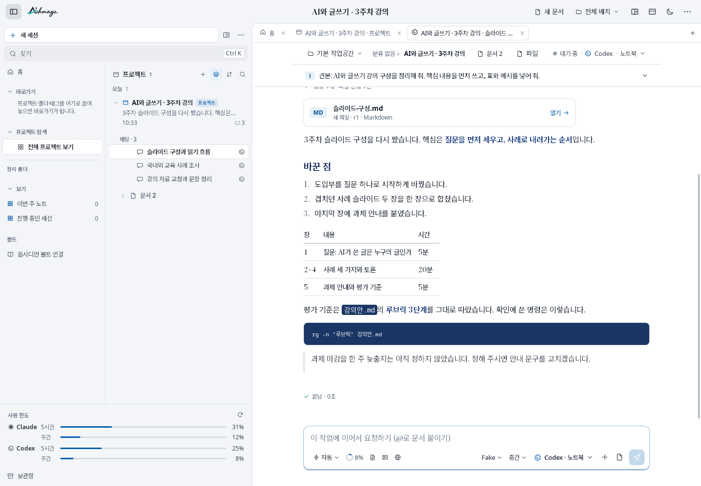

Workbench 0.3.0 ↔ 현재 · 정밀 비교
0.3.0과 현재, 같은 내용으로 비교
SameTone의 서체 특성, 읽기 위계, 탐색 공간과 작업 흐름을 나눠 살펴봅니다. 실제 두 버전의 앱을 별도 프로필에서 실행한 화면입니다.
기본은 원본 1:1 보기입니다. ‘화면에 맞추기’로 줄이면 글자가 흐려질 수 있습니다. Linux WebKitGTK · DPR 1 · 1440×1000. 실제 노트북 125% 배율의 검증을 대신하지 않습니다.
